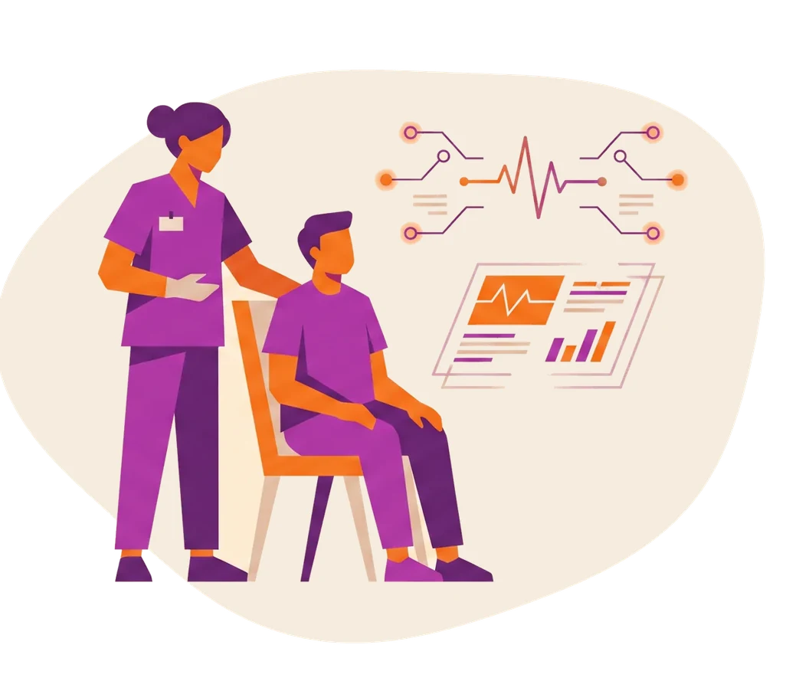
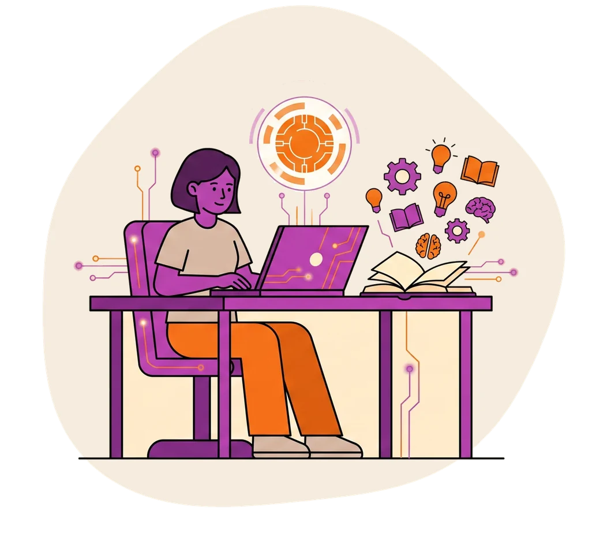
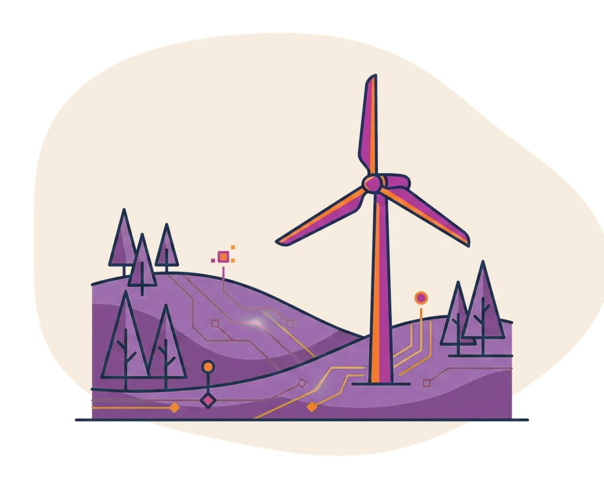

Lancée

Santé · Suivi patient
Carelin
Compagnon IA des maladies chroniques : suivi du traitement au quotidien et alerte des soignants au bon moment.
40kpatients
−22%hospitalisations

Chaque startup part d'un besoin réel et applique la même ligne : l'humain au centre, l'IA en soutien, l'impact mesuré. En voici le panorama.

Compagnon IA des maladies chroniques : suivi du traitement au quotidien et alerte des soignants au bon moment.

Le tuteur IA contre le décrochage : détection précoce des difficultés et parcours adapté à chaque élève, gratuit là où il le faut.

L'information accessible à tous : langue des signes, lecture facile (FALC) et synthèse vocale, co-construites avec les personnes concernées.

La sobriété énergétique à l'échelle du territoire : capteurs, données environnementales et recommandations concrètes pour les collectivités.
Assistant de premiers secours et d'orientation d'urgence, pensé avec des soignants. En validation terrain.
Accompagnement vers l'emploi des personnes éloignées du marché du travail, avec un coach IA humain-dans-la-boucle.
Simplifier l'accès aux droits sociaux : un guide qui explique, traduit et accompagne, contre le non-recours.
Aider les territoires à s'adapter au changement climatique grâce à des scénarios de données locales.
Associations, ONG, collectivités, soignants, enseignants : proposez-nous le prochain projet du groupe.
Proposer un projet